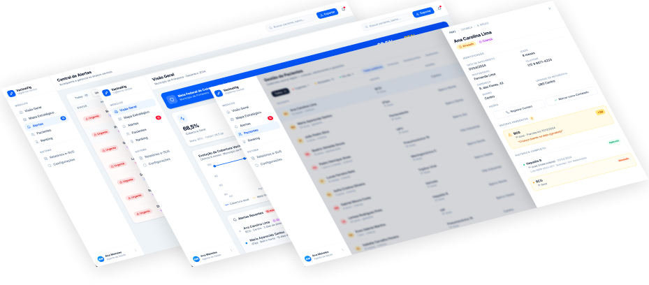

Explorar o contexto
Compreender o trabalho real das pessoas, suas necessidades e os fatores que influenciam cada decisão.
Uma solução concebida a partir da rotina de agentes de saúde e gestores públicos.
O projeto começou pela investigação do contexto de agentes de saúde e gestores: seus processos, informações, restrições e necessidades no dia a dia. A partir dessa compreensão, o trabalho ajudou a orientar uma solução que se encaixasse na rotina das equipes.

Compreender o trabalho real das pessoas, suas necessidades e os fatores que influenciam cada decisão.
Organizar aprendizados e alinhar diferentes perspectivas para definir oportunidades relevantes.
Converter descobertas em direções de experiência, interfaces e critérios para desenvolvimento.
A solução foi construída para aproximar estratégia, pesquisa e design, conectando as necessidades das pessoas aos objetivos do serviço público.